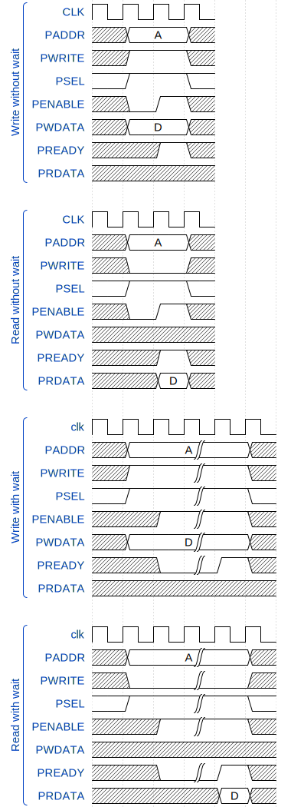

The goal of this lab is to pratice with non trivial component parametrization
The component to implement is a fully asynchronous APB3 bus decoder,
This lab will introduce : - How the scala can be mixed with SpinalHDL for parametrization
As you can see in the Apb3Decoder.scala, there is a outputsMapping : Seq[Mapping] parameter. It specify the number of output bus (outputsMapping.length) and where each of them should be mapped (base address / range).
The APB bus is a very simple (and also old, but still used) peripheral bus. It is specified by ARM, but there is some typical chronograms :
Note : For this labs, you don't need to insert wait cycle on the bus, so you can keep the PREADY always high.
